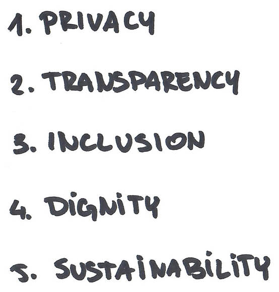
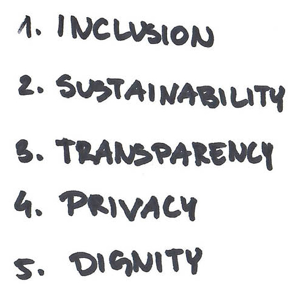
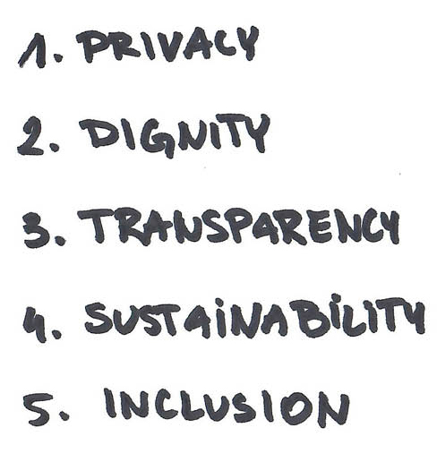
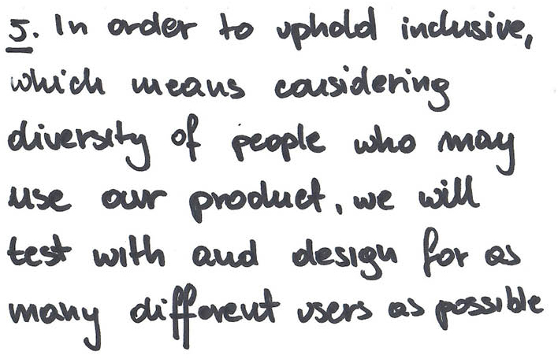
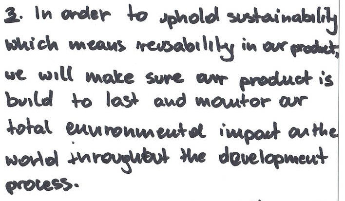

It comes from the VIRT-EU project work and is just one in a series of different tools to try bring ethical reflection into the process of designing connected things. More context here.
As this is a pre-alpha prototype tool ;) we will welcome any feedback you may have from the experience (option to be interviewed about that at the end).
So you submitted a product sketch for the challenge of “Designing for Difference in the Connected Home.” “Design”, “connected”, “smart” shared homes. Let’s dig a little deeper.
What does it mean to add smartness, connectivity and intelligence to the devices we design? And what does it mean to integrate those devices into communal living spaces? At this moment, when headlines around tech gone wrong flood our news daily, let’s reflect.
What is a good [IoT?] product, to you? Does good only mean functions well? Or does a good product align with your idea of what goodness means, in the first place? What if your idea of goodness is not the same as that of your intended users?
Let’s find some North stars, as understood through your values. We'll share some of your community's values (similar IoT start-ups) as uncovered in our research that you can use as inspiration throughout. This exercise is for you to define your North star as we think it’s important for any continued development of your product - hopefully it will be useful as you keep working on your idea.
The experience will take about two hours.
You will need the following:
This computer
A table big enough for your team
A smartphone per teammate
Paper
big and small Post-its
pens
and sharpies.
How many people are in your team?
-
+
We found a story for each one of you to start thinking through.
Take your smartphone out,
open the camera, and position it in front of your respective QR code (one per team member).
Take a few minutes to read your respective stories.
Discuss what you read.
How did it make you feel?
What did it make you excited about, worry about?
Try to pick the product apart and guess a few things about its creation.
Why do you think it exists?
What do you think the creators intentions were?
Saying What You Care About
This round is a solo activity. Keeping in mind what you have read, and what you learned or felt from that discussion, write down what is important to you. This is for you, as a person.
Each individual takes a big Post-it and follows this template:
We can have a better digital future if everyone ____.
I [read the article about] _____ and it inspired me to care about _____.

Present to each other.
Person sitting to the left of computer starts. Take turns.
People can talk about the same words and mean completely different things.
What do you mean by that - can you bring it down to earth? Make a story?
Do we mean the same thing? Make sure your definitions are clear to each other.
Definition Negotiation
Maybe you both talk about “privacy” but understand it differently. Can you agree upon one of the definitions?
Try to re-write at least 2 new definitions per contested word, then discuss again. If you still can’t agree on one communal definition, here are some pointers for discussion:
Some pointers:
When you respond to the other, try saying things like “It sounds like you are concerned about ___”
Try to make sure you repeat the most important things others say to ensure people see that you understand what they are saying.
Remember this is your teammate and try to show that you recognize and respect each others’ opinions, distinct backgrounds, mutual admiration and goal of building something together
If you cannot come to a common definition, that’s fine, just keep your individual definitions and put an asterisk * on words you could not agree upon

Cluster
Place similar ideas near each other on the table in front of you.
Come up with one big word that represents each area and write it on a small Post-its.
Saying What You Care About
This round is a solo activity again but now we are asking you to reflect on what you care about in relation to your product.
Each individual takes a big Post-it and follows one of these templates:
Our product would make the world better/users happier if our device is ______. As in, __example of how you would do it___.
If someone wrote an article about our device, they would say that the creators really care about the ___ in the product.
Present to each other.
Person sitting to the right of computer starts.
Take turns.
People can talk about the same words and mean completely different things.
What do you mean by that - can you bring it down to earth? Make a story?
Do we mean the same thing? Make sure your definitions are clear to each other.
Definition Negotiation
Maybe you both talk about “privacy” but understand it differently.
Can you agree upon one of the definitions?
Try to re-write at least 2 new definitions per contested word, then discuss again. If you still can’t agree on one communal definition, here are some pointers for discussion:
Some pointers:
When you respond to the other, try saying things like “It sounds like you are concerned about ___”
Try to make sure you repeat the most important things others say to ensure people see that you understand what they are saying.
Remember this is your teammate and try to show that you recognize and respect each others’ opinions, distinct backgrounds, mutual admiration and goal of building something together
If you cannot come to a common definition, that’s fine, just keep your individual definitions and put an asterisk * on words you could not agree upon
Cluster
Place similar ideas near each other on the table in front of you.
Come up with one big word that represents each area and write it on a small Post-its.
Saying What You Care About
Here are 15 values coming from similar start-ups to yours.
You can add any of these to your clusters.
Transparency
Providing access to information concerning personal data processing. Encouraging transparency about data operations, device usage and firmware and software upgrades.
Openness
Promoting open hardware and software with open source code.
Responsibility
Strengthening algorithmic accountability/liability.
Interoperability
Promoting interoperability as one of the key values to create a trusted IoT ecosystem. Facilitating data portability, both for taking data out and in.
Accountability
Effectively addressing security and safety issues, adopting adequate risk prevention strategies and measures.
Safety & security
Protecting users against any harm due to IoT devices (hardware and software security). Updatability of devices for security.
Sustainability
Issues concerning the potential impact on social and environmental justice.
Inclusion and equality
Considering diversity and inclusion both in IoT development and with regard to users’ experience.
Participation
Effectively engaging data subjects in data processing design. Promoting debate and dialogue (e.g. manifestos).
Autonomy
Safeguarding individual self-determination and freedom of expression.
Non-discrimination
Preventing any forms of discrimination.
Well-being
Increase individuals’ well-being and fostering “IoT for good”
Dignity
Avoiding any forms of surveillance or invasive control over individuals using IoT devices. IoT devices shall not be used to collect unauthorised private information or to publicly disclose private facts.
Data Protection
Providing users access to their collected data, giving them explanations about how personal information is used.Issues concerning the distinction between anonymous and personal data that could allow companies to avoid data protection but still have impacts on groups and individuals.Ensuring the rights to access, rectification, erasure (right to be forgotten) and to object with regard to personal data processed by means of IoT devices and facilitating data portability.
Privacy
Safeguarding intimacy, identity, and physical integrity.
Take a small Post-it and write down the word you want to have in your company. You can add as many as you want to the existing clusters on the table.
Break time
Great work, now take a quick break
What’s important, to you?
Write down 5 values from the cluster that you will try to uphold at your company.
Order them from highest to lowest priority.



Share Priorities
Person to the right of the computer starts.
Go one by one, say your order.
Have a person note down any “disagreement” in priorities.
What’s important, as a group?
From your lists of each person’s prioritised values,
identify which values are“in line” with each other and if any which are placed at the same order of importance?
If there are different orders of importance, discuss and negotiate a top 5.
Sometimes you can’t have your cake and eat it too.
Here are a few stories of certain values that, when put together, can create tension.
Transparency + security:
A company is making a tracking wearable to find people in a crowd during concerts and big events in case of disasters and emergencies.
The device’s data is shared with event organisers, public health services and local police. The company cares deeply about transparency as in, being open about why they are building the tracker, and security as in, keeping their users as safe as possible.
Pickpocketings have occurred during the concerts and police are using the tracking devices’ GPS data to pinpoint the thieves. Should the company tell the concert goers that their data can be shared to the police before the concert goers start using the wearable?
But then the concert goers might not use the wearable anymore, and will not have a safe experience if there is an emergency.
Openness + inclusion:
A company is making a tracking wearable to find people in a crowd during concerts and big events in case of disasters and emergencies.
The device’s data is shared with event organisers, public health services and local police. The company cares deeply about transparency as in, being open about why they are building the tracker, and security as in, keeping their users as safe as possible.
Pickpocketings have occurred during the concerts and police are using the tracking devices’ GPS data to pinpoint the thieves. Should the company tell the concert goers that their data can be shared to the police before the concert goers start using the wearable?
But then the concert goers might not use the wearable anymore, and will not have a safe experience if there is an emergency.
Responsibility + sustainability + inclusion:
There’s a new connected lightbulb that allows users to control the brightness with voice commands. The company cares deeply about sustainability as in, having as little electronic waste as possible, responsibility as in, being responsible about how they process and use data and the cloud, as well as inclusion as in, including diverse users.
They are releasing a software update with a new machine learning algorithm that will make it easier to process the voice commands. The update can only run on a new microcontroller with local machine learning.
The company is therefore releasing a complete new package. Is there a way to stay true to being “sustainable” while making sure to be “inclusive” to the many voices of their users, and still “responsible” in terms of how they implement their machine learning (locally rather than on the cloud)?
Document and Manifest
Based on your rounds and rounds of clustering, prioritisation and negotiation, write a collective list of the 5 most important values.
This will become your evolving manifesto, your north star, your constitution, your Intentions.
But most importantly you can evolve and change it as you start working on the product.
Nothing to see here
Describe and enact
For each value add a description and an example of how you might put it into.
Use this template
In order to uphold value,
which means definition in our product,
we will action.


Commit it
Time to type it all up
In order to uphold ,
which means in our product,
we will .
Hooray!
We would love to see your table workspace as you have been working through this tool.
Please take a picture of your table from as high above the table as you can.
Email it to us so we can continue to guide you in the future (not required).
virteudesignchallenge@gmail.com
Thank you & Follow-Up
Please check [yes] [no] if you’d like to hear from us about the other series of tools we will develop in the future.
Please check [yes] [no] if you’d be ok with a follow-up interview with our researchers about your experience of using the tool